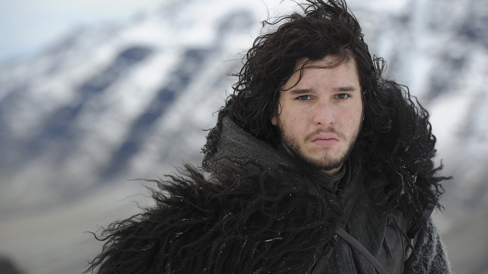

Character
Jon Snow, born Aegon Targaryen, is the son of Lyanna Stark and Rhaegar Targaryen, the late Prince of Dragonstone. After successfully capturing a wight and presenting it to the Lannisters as proof to the Army of the Dead are real, Jon pledges himself and his army to Daenerys Targaryen.